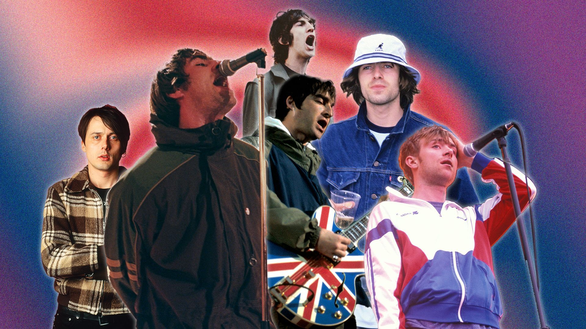
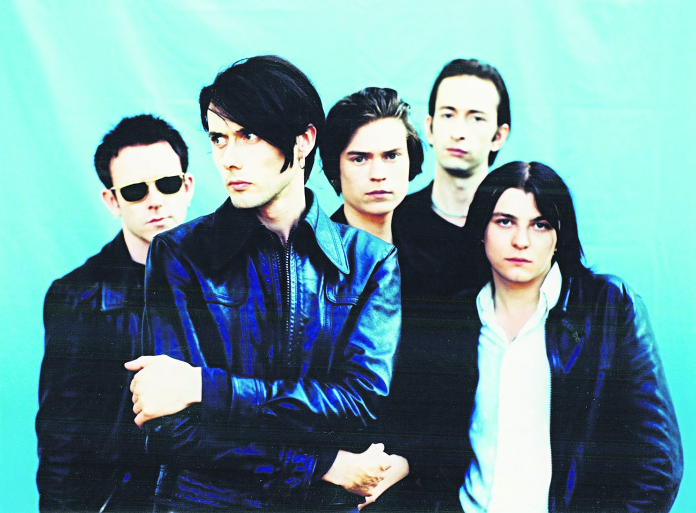
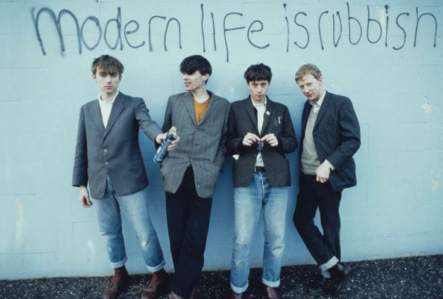
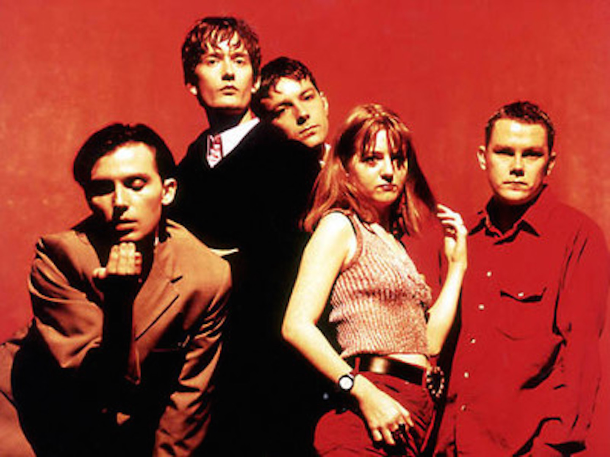
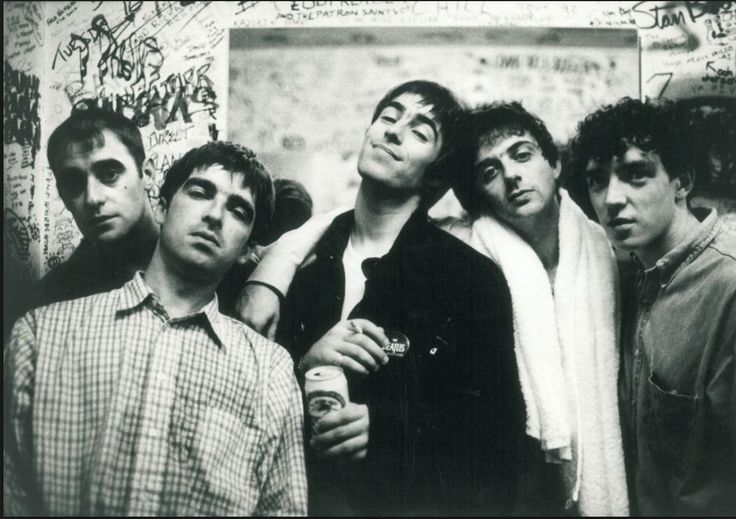

Britpop - The Movement of Glory
Britpop was a mid-1990s British-based music culture movement that emphasised Britishness. Musically, Britpop produced bright, catchy alternative rock, in reaction to the darker lyrical themes and soundscapes of the American-led grunge music and Britain's own shoegaze music scene. The movement brought British alternative rock into the mainstream and formed the larger British popular cultural movement, Cool Britannia, which evoked the Swinging Sixties and the British guitar pop of that decade.
Britpop was a phenomenon that highlighted bands emerging from the independent music scene of the early 1990s. Although often seen as a cultural moment rather than a distinct musical genre, its associated bands typically drew inspiration from the British pop music of the 1960s, the glam rock and punk rock of the 1970s, and the indie pop of the 1980s.
The most successful bands linked with Britpop were Oasis, Blur, Suede and Pulp, known as the "big four" of the movement. The timespan of Britpop is generally considered to be 1993–1997, and its peak years to be 1995–1996. A chart battle between Blur and Oasis (dubbed "The Battle of Britpop") brought the movement to the forefront of the British press in 1995. While music was the main focus, fashion, art and politics also got involved, with Tony Blair and New Labour aligning themselves with the movement.
Suede
Suede kickstarted Britpop with their image, ambition and pop sensibilities demonstrated on their first 4 singles; the remarkable run of The Drowners, Metal Mickey, Animal Nitrate & So Young.
By April 1993, Suede had released the first 3 of the quartet and Brett Anderson appeared on what has become an iconic cover of Select Magazine with the title Yanks Go Home.
Suede were kind of on their own in 1992 going into '93, talking about bi-sexuality, Bowie & The Smiths in a post Madchester/Rave world with the music press being largely fixated on Nirvana and the grunge scene. Suede were distinctly British and they kicked down a door. The floodgates opened. Looking back, Suede kept up a remarkable pace throughout the 1990's; releasing singles every year except 1998 and 4 albums. The line-up that burst on to the scene with Brett Anderson on vocals, Bernard Butler on guitar, Matt Osman on bass and Simon Gilbert on drums just looked and sounded incredible.
Blur
Blur had a link to Suede. Justine Frischmann had been in Suede, also dating Anderson, before leaving to form Elastica and date Blur's Damon Albarn. Brett Anderson cites her as a huge influence on the first Suede album.
This bizarre love triangle is pretty central to Britpop. Look at the change in Blur's look and sound from their 1991 debut Leisure to 1993's Modern Life Is Rubbish! All of a sudden it is Fred Perry polo shirts, blazers and doc martin boots. It wasn't quite as simple as that, there was 1992's Popscene single and an extensive tour of America that left Albarn yearning for England. Perhaps there was also the realisation that Leisure wasn't very good and that with There's No Other Way they had jumped on the Madchester bandwagon.
You could easily argue that Blur jumped to another bandwagon, only this time they were in from the start through Frishmann and Suede. Lead single For Tomorrow shows that Albarn was significantly developing as a songwriter. There is no doubt that Blur changed and developed massively with the Modern Life Is Rubbish album and Albarn gained huge confidence.
Pulp
Jarvis Cocker's Pulp were building a head of steam. The 1992 release of Babies didn't chart but it seemed to mark a change in the band that led to a string of singles leading to the His n Hers album in 1994.
Do You Remember The First Time did chart though, it was Pulp's first top 40 single. It perfectly showcased Jarvis Cocker's humour, style, and edge. All of a sudden Pulp had found an audience and oh how Jarvis Cocker loved to play to an audience! Pulp released their first single away back in 1983, now in March 1994, they finally made the top 40 and a few months later they even made it to Top of the Pops to perform a re-released Babies.
Oasis
In April 1994, they arrived with the release of their debut single, appearing on The Word and on Radio 1 for Glasgow's Sound City where I caught them supporting The Boo Radleys at the Tramway. Later that night, Liam and Noel held court in their hotel room with John Harris from the NME, resulting in a hilarious insight into their relationship and personalities. This was not long after Oasis had been thrown off a ferry to Amsterdam for fighting. Noel was mortified and wanted Oasis to be about the songs, Liam was into the whole rock n roll package and totally up for it ....or as we quickly found out ... mad for it.